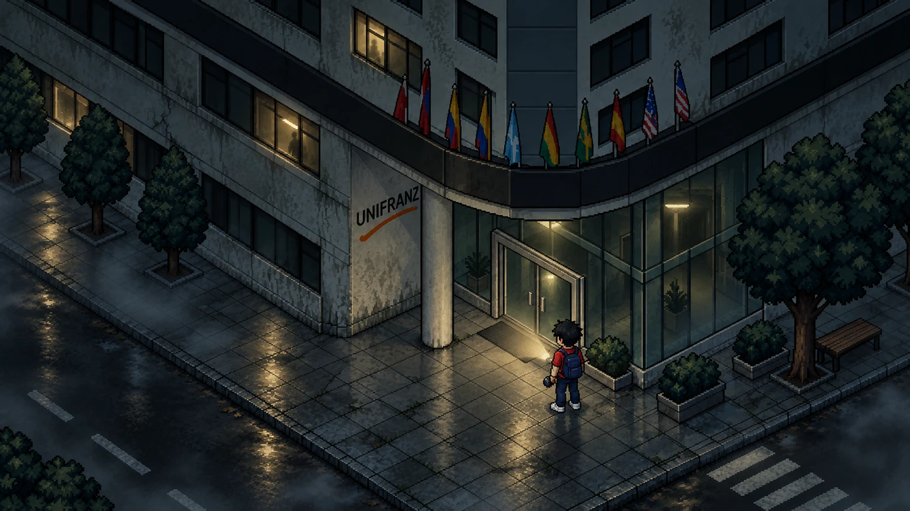
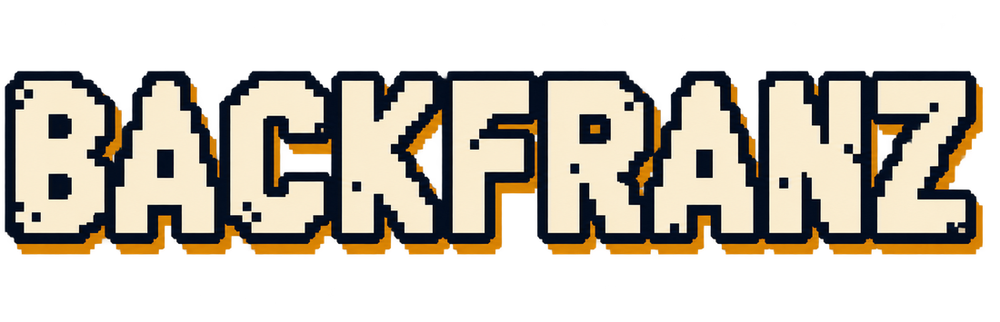
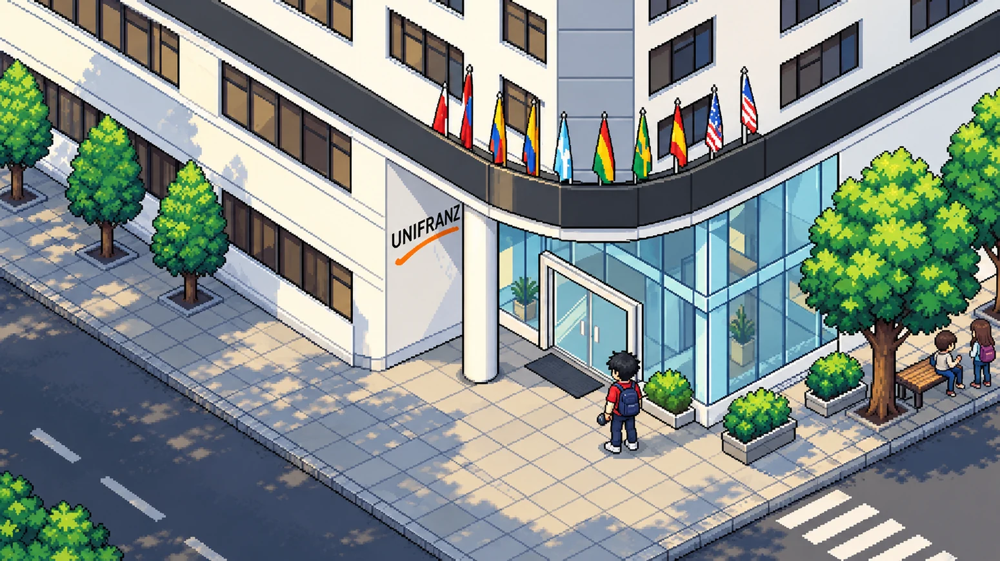
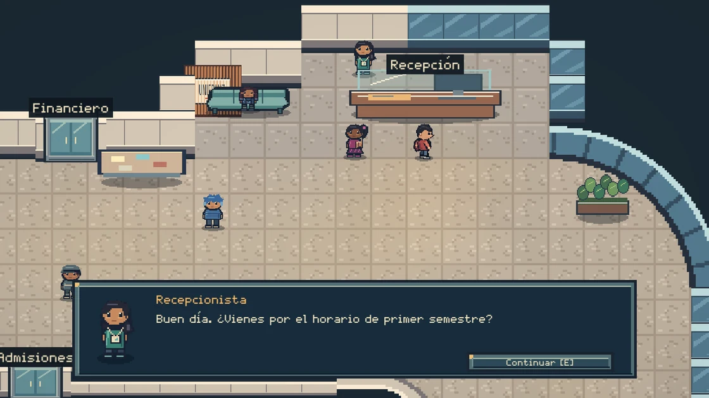
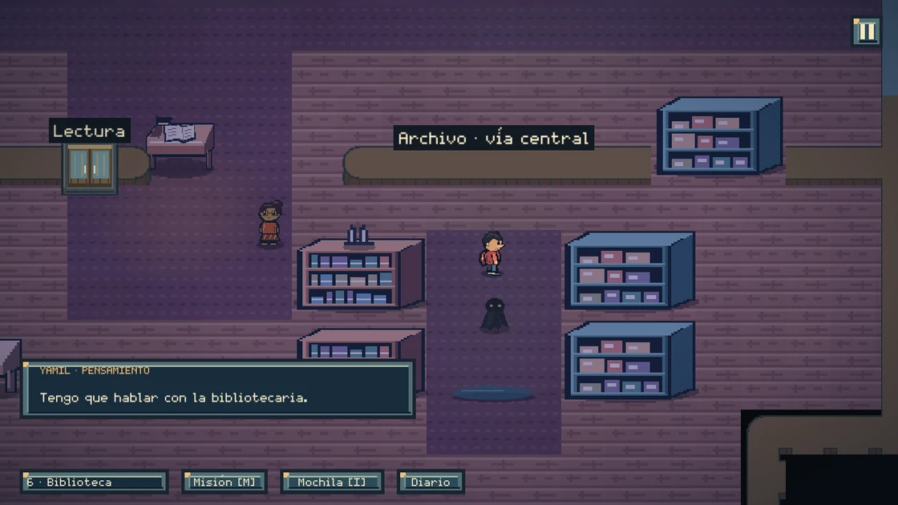
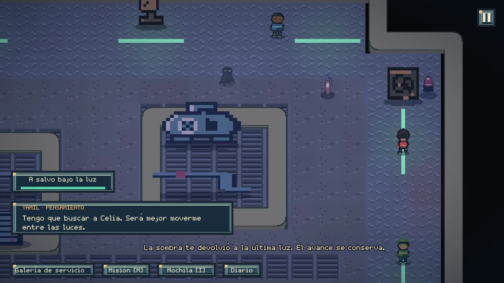

Windows
Descomprime el ZIP y abre Backfranz.exe desde la carpeta extraída.
Descargar para Windows Windows x64 · Archivo ZIP
LA PAZ, BOLIVIA

Tu primer día empieza aquí.
Acompaña a Yamil en su inducción por el Bloque A. Un descenso en ascensor cambia el campus entero. Busca pistas, ayuda a quienes se quedaron dentro y encuentra una salida.
BLOQUE A
De día, Yamil aprende a moverse por la universidad. Durante el apagón, las mismas puertas llevan a recorridos alterados. Compara las dos versiones en el arte del juego.

Inducción ApagónCAPTURAS EN UNITY
El recorrido empieza en Recepción. Más tarde, una puerta conocida o una luz de emergencia pueden marcar la diferencia.



GRUPO 64 · VERSIÓN 1.0.1
Elige tu plataforma. Ambas versiones incluyen la inducción, la campaña de escape y los tres finales.
Descomprime el ZIP y abre Backfranz.exe desde la carpeta extraída.
Descargar para Windows Windows x64 · Archivo ZIPDescarga el APK en tu dispositivo. El juego se abre en horizontal y tiene controles táctiles ampliados.
Descargar para Android Android 8.0 o posterior · Archivo APKPROYECTO JUGABLE
Clona el repositorio, añade la carpeta a Unity Hub y ábrela con Unity 6000.3.16f1. Entra a Assets/Scenes/MenuPrincipal.unity, pulsa Play y elige Nueva partida.
git clone https://github.com/Alexwuuu1/backfranz.git